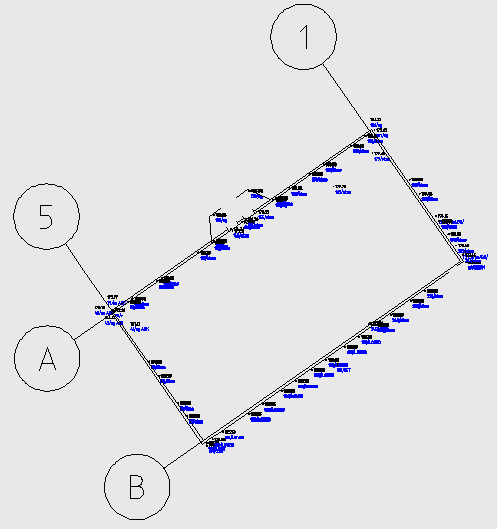
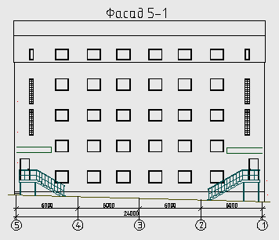
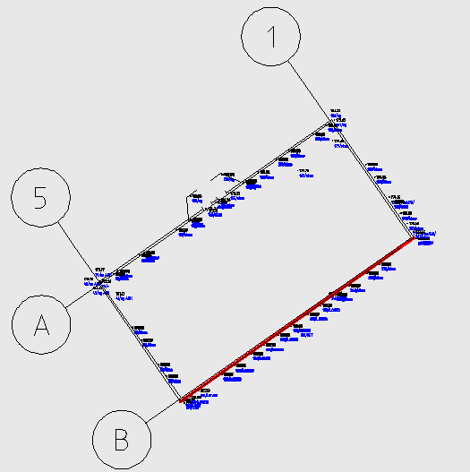
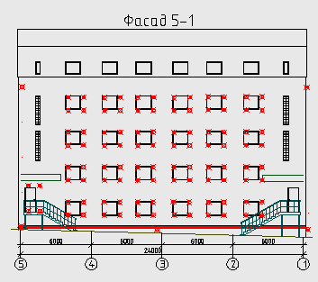

Команда: draw_fasade
Команда: draw_fasadeНаносит измереные COGO точки на фасад.
Имеем проект здания (план и фасад), а также исполнительную съемку положения углов здания, углов оконных проемов и окон. Задача нанести на проект фактическое положение.
 В плане отклонения определяются просто (например Подпись смещения). С положением окон и дверей сложнее нужно "повернуть" отметки в высоту. Для этого и нужна эта программа. на плане рисуется линия проектного положения стены отметки вершин линии соответствуют известным отметкам на проектном фасаде.
После работы программы получаем фасад с нанесенными точками (обычными автокадовскими) на фасаде. При чем отметка точки будет рассоянием от измененой cogo-точки до проектной линии под прямым углом.
Команда: draw_fasade
 Выбор COGO точек.
Выбор COGO точек.
Выберите объекты:
 Указывает cogo-точки которые необходимо спроецировать на стену.
Указывает cogo-точки которые необходимо спроецировать на стену.
Выбери проектную линию стены:
Указывает линию соответствующую проектной стене.
Укажи точку вставки:
Указывает точку вставки с лева на проекте фасада.
В принципе кнопке есть куда развиваться и обрастать настройками, но применение было разовым и больше не предвидится. Поэтому дописывать не собираюсь, но если кому надо и есть конкретные мысли что добавить пишите постараюсь доработать.